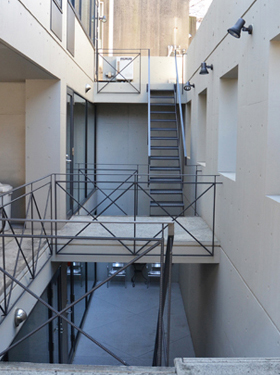
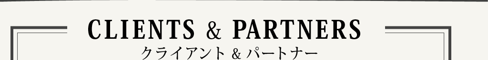
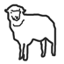
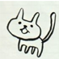
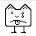

ユニバ株式会社はクロスメディア・クロスデバイス領域で活動するデザイン会社です。
多くのPC、モバイルを横断するウェブサービス、キャンペーン、サイトを手がけてきました。
近年はスマートフォン、デジタルサイネージ等の隆盛を受けて、
新しいウェブ標準とメディアアートがクロスする領域に取り組んでいます。
- 
- 社名
- ユニバ株式会社 Uniba Inc.
- 設立
- 2003年6月2日
- オフィス
- 150-0001
東京都渋谷区神宮前5-34-4
ジェイハウス B1F - TEL
- 03 3486 9337
- FAX
- 03 6427 4787
- Eメール
- info@uniba.jp
- 資本金
- 1000万円
Uniba on Vimeo

 |
Jun Komatsu
小松 純

Haruma Kikuchi
菊地 玄摩
Rei Kawai
河合 伶
Yui Gokita
五木田 唯衣
Seiya Konno
今野 聖也
Noriyuki Shimizu
清水 規行

Ryo Murayama
村山 遼
- 
Tetsuro Shimura
志村 徹朗
Shinichi Katayama
片山 慎一
Keiichi Tanifuji
谷藤 圭一
- 
Song Yang
宋 洋
Andre Elder
エルダ アンドレ
Hideyuki Saito
齋藤 秀行
- 